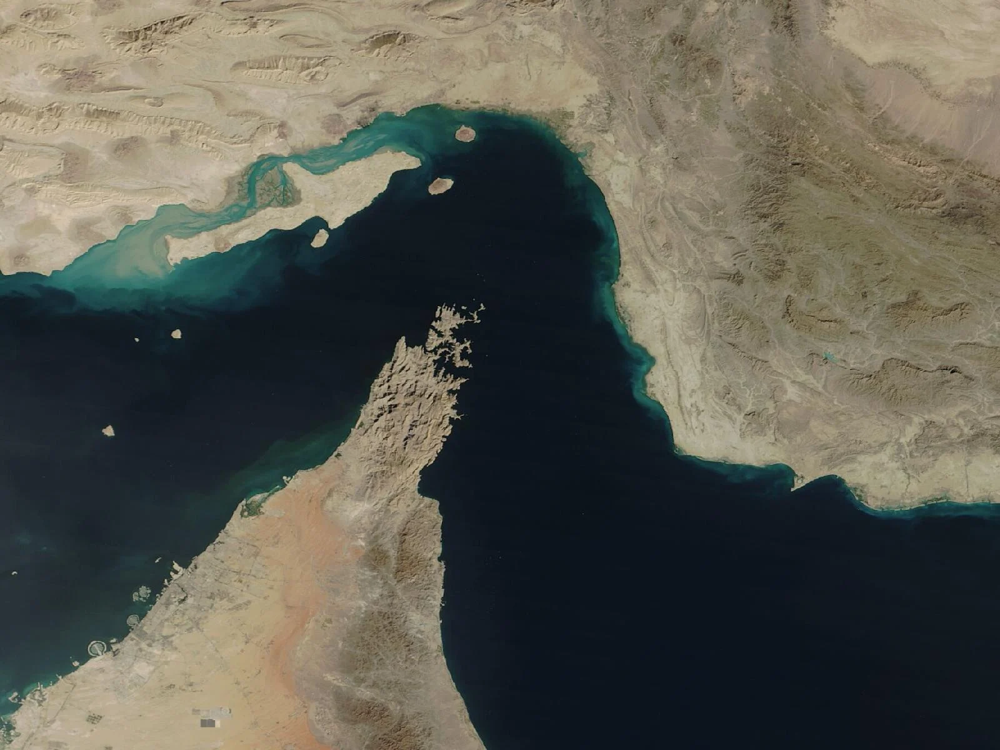
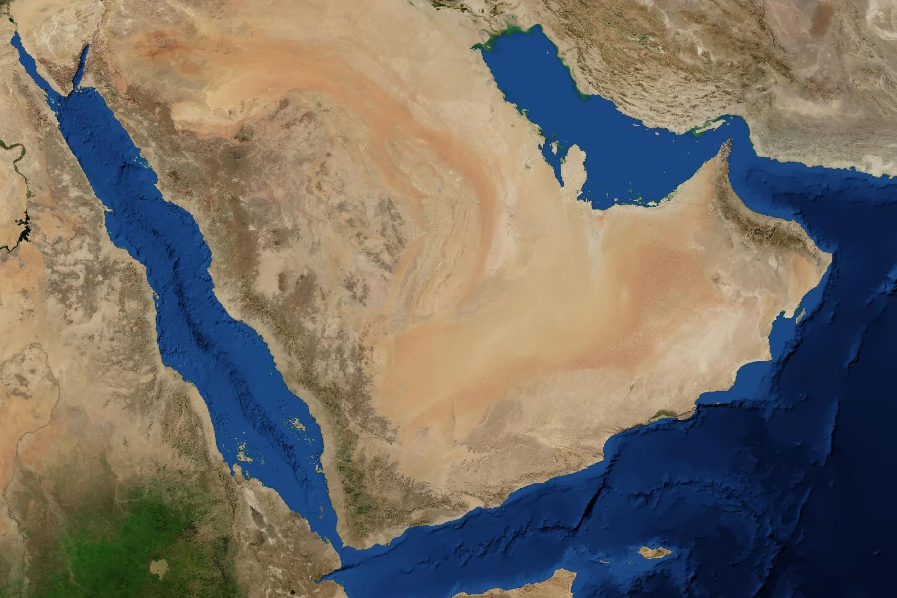

Un bras de mer d'une trentaine de kilomètres, entre l'Iran et la pointe omanaise du Musandam, par lequel le golfe Persique s'ouvre sur l'océan Indien. Le premier point de passage pétrolier du monde, et depuis le 28 février 2026 le théâtre d'une fermeture sans précédent.
Le golfe Persique est une mer presque fermée : tout ce qui en sort par bateau passe par Ormuz. En 2024, environ un cinquième du pétrole consommé dans le monde et un cinquième du GNL échangé y ont transité.
2
Une arme pour l'Iran
Maître de la rive nord et d'un chapelet d'îles, l'Iran peut menacer le passage avec des moyens modestes (mines, drones, vedettes, missiles côtiers). C'est l'exemple type de la stratégie du faible au fort.
3
Un test pour la mondialisation
La fermeture de 2026 l'a montré : il suffit de rendre le passage trop risqué pour l'assurer. Prix de l'énergie, stocks d'urgence, oléoducs de contournement : le monde entier s'ajuste à un seul détroit.
02
La carte commentée
Cliquez sur un numéro pour lire le repère.

Image : NASA Worldview, MODIS Terra, 8 nov. 2025
Neuf repères
Le détroit dessine un crochet autour de la péninsule du Musandam. La rive iranienne domine le passage.

Image : NASA Blue Marble
Le détroit dans son réseau
En orange, les oléoducs qui permettent d'éviter Ormuz. En pointillés blancs, les grandes routes maritimes.
Les couloirs de navigation et les oléoducs sont tracés de façon schématique. Les images satellite sont libres de droits (NASA).
03
Comprendre
Cinq temps pour passer de la carte à l'analyse.
IUn goulet entre deux mers
Le golfe Persique est une mer intérieure peu profonde, longue d'environ 1 000 km, qui ne communique avec l'océan que par une seule porte : le détroit d'Ormuz. Celui-ci dessine un crochet autour de la péninsule du Musandam, une exclave montagneuse du sultanat d'Oman séparée du reste du pays par les Émirats arabes unis. En face, la côte iranienne de la province d'Hormozgan, avec le port de Bandar Abbas.
La géographie donne à l'Iran une position de surplomb. Sa rive est longue, et un chapelet d'îles (Qeshm, Ormuz, Larak, Hengam) s'avance vers les routes des navires. À l'entrée côté golfe, Téhéran tient aussi Abou Moussa et les deux îles Tombs, prises en 1971 et revendiquées par les Émirats. Les navires, eux, empruntent deux couloirs d'environ 3 km de large, un par sens, tracés dans les eaux omanaises où le chenal est le plus profond.
Au plus étroit, le détroit ne mesure qu'une trentaine de kilomètres. Comme chaque État riverain peut étendre sa mer territoriale jusqu'à 12 milles marins (22 km), il n'existe aucun couloir de haute mer : tout le passage se trouve dans les eaux iraniennes ou omanaises. C'est le droit international des détroits, et non la haute mer, qui garantit la libre circulation.
Le nom aussi est un enjeu
L'Iran défend l'appellation historique de « golfe Persique » ; les États arabes parlent de « golfe Arabique ». En français, on dit « golfe Persique », parfois « golfe arabo-persique » pour rester neutre. Quant au nom d'Ormuz, on le rapproche souvent d'Ahura Mazda (Hormozd en persan), la divinité suprême du zoroastrisme, mais son origine reste discutée.
IIDe la « pierre de l'anneau » au lac britannique
Bien avant le pétrole, Ormuz est un carrefour. Aux XIVe et XVe siècles, le royaume d'Ormuz, installé sur une île aride face à la côte, contrôle le commerce entre l'Inde, la Perse et l'Arabie : épices, soieries, perles, chevaux. Un dicton rapporté par les voyageurs résume son importance : si le monde était un anneau, Ormuz en serait la pierre précieuse.
Cette richesse attire les Portugais, qui cherchent à contrôler les routes de l'océan Indien. Afonso de Albuquerque attaque Ormuz en 1507 et s'en empare définitivement en 1515 : le Portugal tient alors les entrées du golfe Persique, avec Malacca (1511) et Goa (1510), les grands verrous de l'océan Indien. En 1622, le chah Abbas Ier, aidé par les navires de la Compagnie anglaise des Indes orientales, chasse les Portugais. Le commerce se déplace vers la côte, à Bandar Abbas.
Au XIXe siècle, le Royaume-Uni fait du golfe une chasse gardée : traités avec les cheikhs de la « Côte de la Trêve » (à partir de 1820), protection de la route des Indes. Quand Londres annonce en 1968 son retrait « à l'est de Suez », effectif en 1971, l'Iran du chah veut prendre le relais comme gendarme du golfe : c'est dans ce contexte qu'il occupe Abou Moussa et les Tombs, le 30 novembre 1971.
IIILe verrou du pétrole
Le pétrole change l'échelle de l'enjeu. Découvert en Perse dès 1908, puis en Arabie saoudite en 1938, il fait des rives du golfe le premier réservoir mondial d'hydrocarbures. Ormuz devient le robinet de l'économie mondiale. En 2024, selon l'Agence américaine d'information sur l'énergie (EIA), environ 20 millions de barils par jour y transitent, soit environ 20 % de la consommation mondiale de pétrole et plus d'un quart du commerce maritime de pétrole, ainsi qu'environ un cinquième du gaz naturel liquéfié échangé dans le monde, essentiellement qatari.
Après la révolution iranienne de 1979 et l'invasion soviétique de l'Afghanistan, les États-Unis font du golfe une zone d'intérêt vital.
« Toute tentative d'une force extérieure de prendre le contrôle de la région du golfe Persique sera considérée comme une atteinte aux intérêts vitaux des États-Unis d'Amérique, et une telle atteinte sera repoussée par tous les moyens nécessaires, y compris la force militaire. »
Jimmy Carter, discours sur l'état de l'Union, 23 janvier 1980 (la « doctrine Carter »)
La doctrine est mise à l'épreuve pendant la guerre Iran-Irak (1980-1988). À partir de 1984, les deux belligérants s'attaquent aux pétroliers de l'adversaire et de ses clients : c'est la guerre des tankers, qui touche plusieurs centaines de navires. En 1987, les États-Unis font naviguer des pétroliers koweïtiens sous pavillon américain et les escortent (opération Earnest Will). En avril 1988, après qu'une frégate américaine a heurté une mine iranienne, l'US Navy détruit plusieurs navires et plateformes iraniens (opération Praying Mantis). Le 3 juillet 1988, le croiseur Vincennes abat par erreur un Airbus d'Iran Air : 290 morts. Depuis 1995, la Ve flotte américaine est basée à Bahreïn.
Pour l'Iran, la menace de fermer le détroit devient un levier régulier : face aux sanctions pétrolières en 2011-2012, puis en 2019, année d'attaques contre des pétroliers et de la saisie du britannique Stena Impero. La France, présente à Abou Dhabi par une base militaire depuis 2009, lance en 2020 une mission européenne de surveillance du détroit (EMASoH).
IVLe droit de passage, une bataille juridique
La convention des Nations unies sur le droit de la mer de 1982 (dite de Montego Bay) crée pour les détroits internationaux un régime particulier, le passage en transit : tous les navires et aéronefs, y compris militaires, peuvent franchir le détroit sans autorisation, de façon continue et rapide, et l'État riverain ne peut ni l'empêcher ni le suspendre (articles 38 et 44).
Le problème, c'est que l'Iran a signé la convention sans la ratifier. Lors de sa signature, il a déclaré que le passage en transit était un avantage réservé aux États parties, et non une règle coutumière. Or les États-Unis ne l'ont pas ratifiée non plus. Téhéran estime donc pouvoir ne leur accorder que le passage inoffensif, plus restrictif, et sa loi sur les espaces maritimes de 1993 exige une autorisation préalable pour les navires de guerre étrangers. Washington répond que le passage en transit relève du droit coutumier et s'impose à tous.
Ce que cela change
Le débat n'est pas théorique : il permet à l'Iran de présenter ses contrôles, ses « routes autorisées » ou ses projets de péage comme légaux, et aux États-Unis de justifier escortes et opérations de liberté de navigation. Le détroit est autant un champ de bataille juridique que militaire.
V2026 : l'arme du détroit
Le 28 février 2026, les États-Unis et Israël lancent des frappes massives sur l'Iran. En quelques heures, les Gardiens de la révolution avertissent par radio qu'aucun navire ne passera, et le trafic s'effondre. La fermeture est moins un mur qu'un risque : dès le 5 mars, les assureurs retirent leurs garanties, et le détroit devient juridiquement ouvert mais fermé de fait. Des mines sont posées, des drones et des missiles visent les navires. Le Qatar arrête sa production de gaz liquéfié ; le Brent dépasse 100 dollars le 8 mars et clôture à un record de 118,35 dollars le 31 mars.
La riposte s'organise. Le 11 mars, les 32 membres de l'Agence internationale de l'énergie décident de libérer 400 millions de barils de leurs stocks stratégiques, un record. Le cessez-le-feu du 8 avril ne rouvre pas le passage, et les États-Unis répondent par le blocus des ports iraniens. En avril, l'Organisation maritime internationale compte environ 20 000 marins et 2 000 navires bloqués dans le golfe. Un protocole d'accord signé le 17 juin promet la réouverture, mais la trêve s'effondre début juillet, et le blocus américain reprend le 14 juillet.
À l'automne, le détroit n'est toujours pas rouvert. Entre le 28 septembre et le 5 octobre, on compte au moins douze attaques contre des navires, un record depuis le début de la guerre ; le 4 octobre, seuls quatre navires le franchissent, contre environ 85 par jour avant la crise. Le 26 septembre, Donald Trump a rejeté le plan iranien de réouverture en sept jours. Pourtant, les monarchies du golfe ont appris à contourner : selon le cabinet Kpler, en septembre, environ 40 % de leur brut passe par oléoduc, contre 17 % avant la guerre, et leurs exportations de brut ont presque retrouvé leur niveau d'avant-guerre. L'arme iranienne s'émousse, tandis que ses propres exportations sont presque nulles sous le blocus américain.
Quatre ordres de grandeur à retenir, puis trois graphiques.
20 Mb/jde pétrole par le détroit en 2024, soit environ 20 % de la consommation mondialeEIA, juin 2025
1/5du commerce mondial de gaz naturel liquéfié, surtout qatariEIA, 2024
84 %du brut qui franchit Ormuz part vers l'AsieEIA, 2024
4 / 85navires passés le 4 octobre 2026, contre environ 85 par jour avant la criseFMI, PortWatch
Peut-on se passer d'Ormuz ?
En millions de barils par jour
Source : EIA, Amid regional conflict, the Strait of Hormuz remains critical oil chokepoint, 16 juin 2025. Les oléoducs ne remplacent qu'une petite partie du flux.
Pour qui le pétrole d'Ormuz ?
Destinations du brut et des condensats en 2024, sur 100 barils
Chine, Inde, Japon, Corée du Sud : 69Reste de l'Asie : 15Reste du monde : 16
Source : EIA, juin 2025. Les États-Unis n'importaient par Ormuz qu'environ 0,5 million de barils par jour, 7 % de leurs importations de brut.
Le Brent en 2026 : quelques dates clés
Prix du baril de Brent, en dollars, à cinq dates documentées (le cours a fluctué entre ces points)
Sources : Wikipédia, 2026 Strait of Hormuz crisis (cours de clôture du 31 mars, du 1er et du 23 juillet) ; straits.live (clôture du vendredi 9 octobre).
05
Qui veut quoi ?
Six acteurs, leurs intérêts et leurs moyens.
🇮🇷L'Iran
Ce qu'il veut
Faire du détroit une monnaie d'échange : sanctions, sécurité du régime, reconnaissance de sa souveraineté sur le passage.
Moyens et limites
Mines, drones, vedettes rapides et missiles des Gardiens de la révolution. Mais ses propres exportations passent par le golfe.
🇺🇸Les États-Unis
Ce qu'ils veulent
Garantir la liberté de navigation, protéger leurs alliés du golfe et empêcher l'Iran de dicter ses conditions.
Moyens et limites
La Ve flotte (Bahreïn), escortes, déminage, blocus. Peu dépendants du pétrole du golfe, ils subissent pourtant la hausse des prix.
🇸🇦Arabie saoudite et Émirats
Ce qu'ils veulent
Continuer à exporter et réduire leur dépendance au détroit, sans entrer en guerre ouverte avec l'Iran.
Moyens et limites
Oléoducs vers Yanbu et Fujaïrah, alliance américaine. Mais leurs terminaux restent à portée de drones.
🇴🇲Oman (et le Qatar)
Ce qu'ils veulent
Oman, riverain sud, veut rester le médiateur entre Téhéran et Washington. Le Qatar, sans autre sortie pour son gaz, veut la réouverture.
Moyens et limites
Les couloirs passent dans les eaux omanaises : un atout de négociation. Le Qatar n'a aucun plan B.
🇨🇳La Chine et l'Asie
Ce qu'elles veulent
Un pétrole sûr et bon marché : Chine, Inde, Japon et Corée du Sud reçoivent 69 % du brut d'Ormuz.
Moyens et limites
La Chine, premier acheteur du pétrole iranien, obtient parfois le passage de ses navires, mais n'a pas de flotte sur place pour imposer l'ouverture.
🇪🇺L'Europe et la France
Ce qu'elles veulent
Faire baisser les prix de l'énergie et éviter l'escalade, tout en ménageant l'allié américain.
Moyens et limites
Stocks stratégiques (AIE, G7), base française d'Abou Dhabi, missions navales. Un poids militaire limité dans la région.
06
Dans une copie
Comment mobiliser Ormuz en dissertation ou en étude de document.
Une accroche
« Juridiquement ouvert, fermé de fait » : en mars 2026, le détroit d'Ormuz se vide moins sous les coups de la marine iranienne que sous l'effet du retrait des assureurs, le 5 mars.
Elle montre d'emblée que le contrôle d'un espace maritime passe aussi par le risque et l'économie, et pas seulement par la force.
L'idée-force
Ormuz illustre le paradoxe de la mondialisation : des flux immenses, mais qui dépendent de quelques points de passage étroits. Contrôler un goulet donne à une puissance moyenne un pouvoir de nuisance mondial (stratégie du faible au fort).
Nuance indispensable : l'arme est à double tranchant. L'Iran exporte lui-même par le golfe, la fermeture rapproche ses voisins des États-Unis, et le contournement par oléoducs, même partiel, en réduit l'effet avec le temps.
Des sujets où le placer
Mers et océans : de nouveaux espaces de rivalités ?
Les ressources énergétiques, une arme géopolitique ?
La mondialisation est-elle vulnérable ?
Le Moyen-Orient, un espace de conflits au cœur du monde
Les États-Unis, gendarmes du monde ?
Références à citer
Alfred T. Mahan, The Influence of Sea Power upon History (1890) : la puissance passe par la maîtrise des mers et de leurs passages.
La doctrine Carter (1980), qui fait du golfe un intérêt vital américain.
Le « dilemme de Malacca » (Hu Jintao, 2003) : la Chine redoute la même dépendance à un détroit, et diversifie ses routes.
La convention de Montego Bay (1982) et le passage en transit.
Les erreurs à éviter
« Le détroit est dans les eaux internationales. » Faux : il est entièrement dans les eaux iraniennes et omanaises. C'est le régime du passage en transit qui garantit la libre circulation.
« Ormuz, c'est d'abord l'affaire de l'Occident. » L'Asie reçoit 84 % du brut ; les États-Unis n'en dépendent que très peu.
Confondre Ormuz et Bab el-Mandeb, le détroit de la mer Rouge menacé par les Houthis.
Oublier Oman : c'est l'autre riverain, et les couloirs passent dans ses eaux.